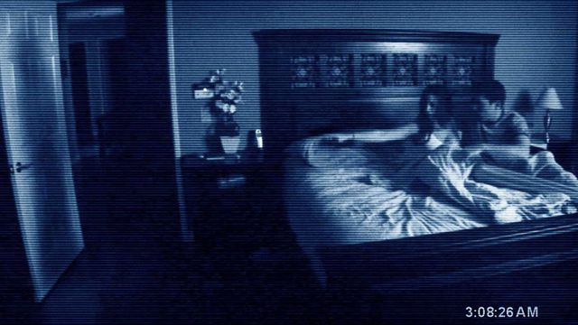
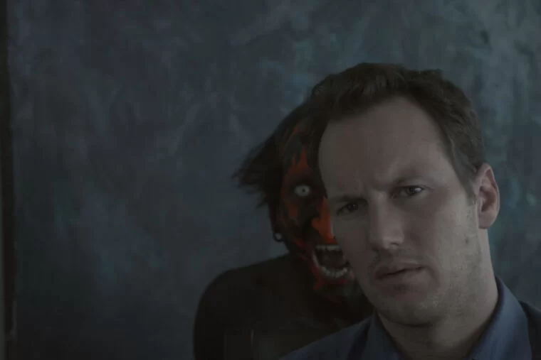
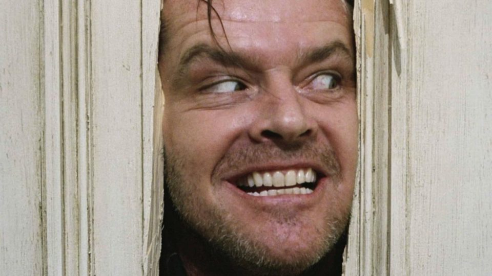
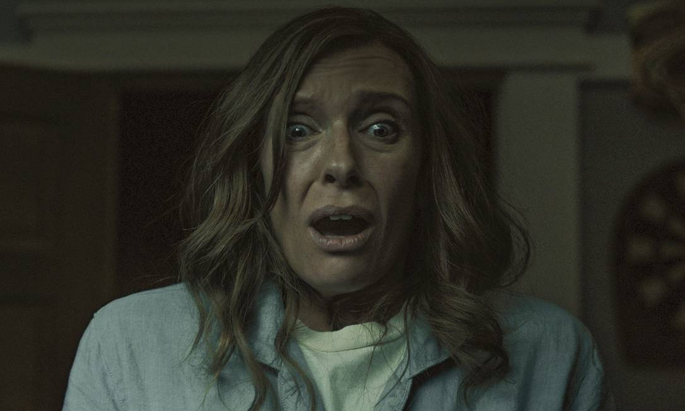
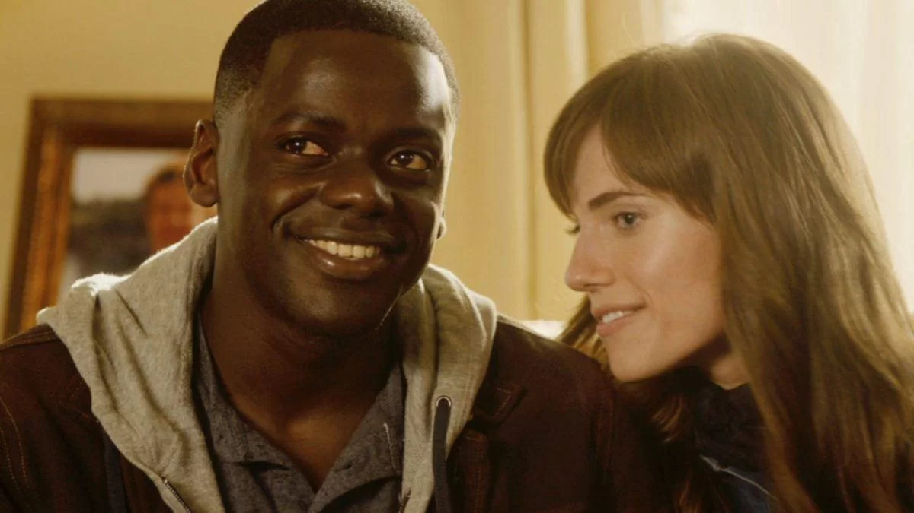
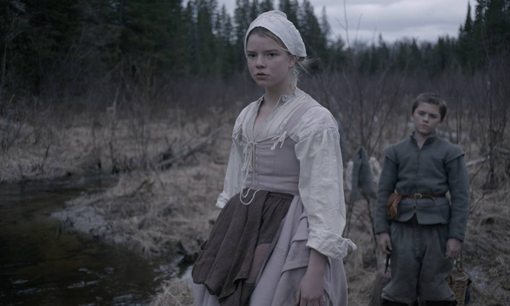
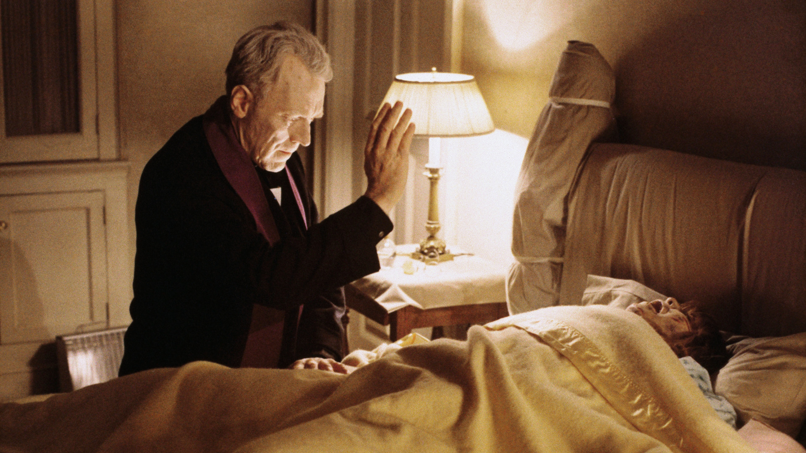
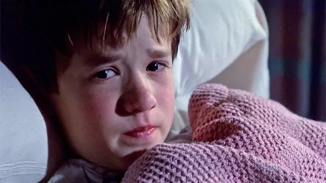
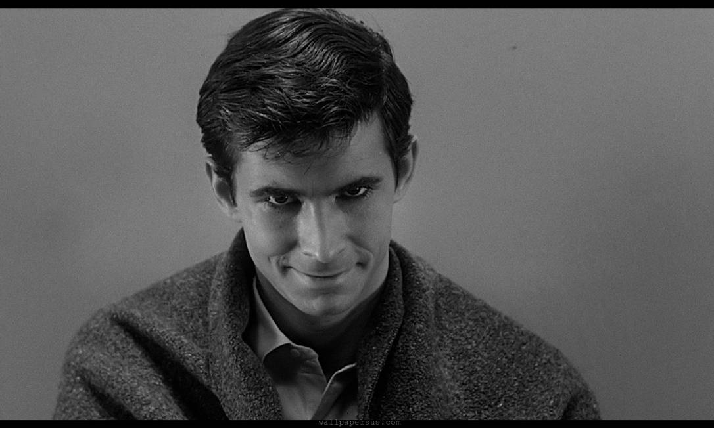
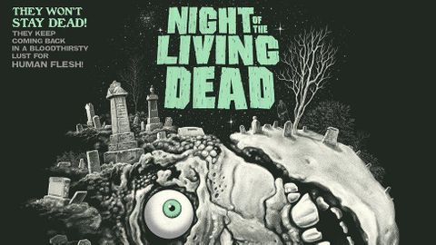

Veja os 10 melhores filmes de terror de todos os tempos!
De clássicos como A noite dos Mortos-Vivos (1968) a terrores psicológicos como Nós (2019), confira a lista com filmes cheios de susto e sangue do gênero mais assustador do cinema e onde assistir
Por: Nathan Siqueira
23/03/2024 08h32 - Atualizado há 3 meses
Atividade paranormal (2024)
Se você sempre fica em dúvida em qual filme escolher, nós do Top Rated separamos para você uma seleção com os filmes de terror com melhor avaliação segundo a crítica. Embarque nessa jornada de suspense e medo, explorando desde os clássicos que definiram o gênero até as produções mais recentes que estão dando o que falar. Prepare a pipoca, apague as luzes e aproveite esses títulos que prometem tirar o seu sono e deixar você grudado na tela do começo ao fim.
Sobrenatural
Vale salientar que os filmes não estão em uma ordem específica, então sinta-se a vontade para rankear como quiser!
A lista contém os seguintes filmes:
Hereditário (2018)
O Exorcista (1973)
Halloween (1978)
Nós (2019)
Corra! (2017)
A Bruxa (2015)
A Noite dos Mortos-Vivos (1968)
O Iluminado (1980)
O Sexto Sentido (1999)
Psicose (1960)
O Iluminado
Com 84% no Rotten Tomatoes e 63/100 no Metacritic, "O Iluminado", dirigido por Stanley Kubrick e baseado na obra de Stephen King, segue Jack Torrance, um escritor contratado para cuidar de um hotel isolado durante o inverno com sua família. Conforme segredos sombrios emergem e o isolamento se intensifica, Jack começa a perder a sanidade, levando-o a uma espiral de violência que ameaça a vida de sua esposa e filho.
O iluminado (1980)
Hereditário
Com 89% no Rotten Tomatoes e 87/100 no Metacritic, "Hereditário", dirigido por Ari Aster, mergulha no terror familiar quando a morte da avó desencadeia eventos sobrenaturais que assombram a família Graham. Confrontada com segredos perturbadores e forças além de sua compreensão, a matriarca Annie se vê em uma luta desesperada para salvar sua família do destino sinistro que os espera.
Hereditário (2018)
Corra!
Com 98% no Rotten Tomatoes e 84/100 no Metacritic, "Corra!", dirigido por Jordan Peele, é um thriller psicológico que aborda o racismo e a identidade. Chris, um jovem negro, visita a família de sua namorada branca em uma propriedade isolada, onde eventos perturbadores revelam segredos sombrios sobre a comunidade e a família, levando a um confronto de proporções inesperadas.
Corra! (2017)
A bruxa
Com 90% no Rotten Tomatoes e 83/100 no Metacritic, "A Bruxa", dirigido por Robert Eggers, transporta o espectador para a Nova Inglaterra do século XVII, onde uma família puritana enfrenta forças sobrenaturais após o desaparecimento de seu filho mais novo. O filme é elogiado por sua ambientação autêntica, tensão psicológica e uso eficaz do folclore para criar um terror visceral.
A Bruxa (2015)
O Exorcista
Com uma aprovação de 86% no Rotten Tomatoes e uma pontuação de 81/100 no Metacritic, "O Exorcista", dirigido por William Friedkin, é um marco do terror que narra a terrível batalha entre o bem e o mal quando uma jovem, Regan MacNeil, é possuída por uma entidade demoníaca. Um padre cético é chamado para realizar um exorcismo desesperado, desafiando a fé e a coragem enquanto o horror se desenrola.
O Exorcista (1973)
Halloween
Com 96% no Rotten Tomatoes e 87/100 no Metacritic, "Halloween", dirigido por John Carpenter, é um clássico do terror que introduziu o icônico assassino Michael Myers. A história segue Myers enquanto ele aterroriza Laurie Strode e seus amigos em Haddonfield no Dia das Bruxas. Com sua trilha sonora inconfundível e um suspense implacável, o filme estabelece um padrão para o gênero slasher.

Halloween (1978)
O Sexto Sentido
Com 85% no Rotten Tomatoes e 64/100 no Metacritic, "O Sexto Sentido", dirigido por M. Night Shyamalan, é um thriller psicológico que segue o psicólogo infantil Malcolm Crowe enquanto ele tenta ajudar um garoto perturbado, Cole Sear, que pode ver e interagir com os mortos. À medida que Malcolm se aprofunda no mistério por trás dos segredos de Cole, ele descobre verdades perturbadoras que mudam suas vidas para sempre.
O Sexto Setido (1999)
Psicose
Com 96% no Rotten Tomatoes e 97/100 no Metacritic, "Psicose", dirigido por Alfred Hitchcock, é um thriller psicológico que acompanha Marion Crane, uma secretária que rouba dinheiro de seu empregador e foge para um motel isolado dirigido por Norman Bates. O filme é conhecido por sua reviravolta icônica e cenas que se tornaram fundamentais no gênero do terror e do suspense.
Psicose (1960)
Nós (2019)
Com 93% no Rotten Tomatoes e 81/100 no Metacritic, "Nós", também dirigido por Jordan Peele, explora os horrores enfrentados por uma família confrontada com versões distorcidas e violentas de si mesmas durante um retiro tranquilo na praia. Adelaide, a protagonista, deve desvendar o mistério por trás de seus perseguidores e enfrentar um passado enterrado que ameaça destruí-la.

Nós! (2019)
A Noite dos Mortos-Vivos
Com 96% no Rotten Tomatoes e 89/100 no Metacritic, "A Noite dos Mortos-Vivos", dirigido por George A. Romero, é um marco no cinema de zumbis. O filme acompanha um grupo de sobreviventes presos em uma casa enquanto os mortos retornam à vida para se alimentar dos vivos, explorando temas sociais e políticos através de uma atmosfera claustrofóbica.
A Noite dos Mortos-vivos (1968)